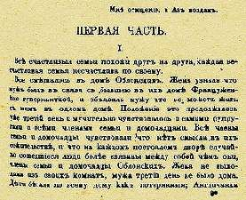

Борис Акунин
Мой календарь
По-настоящему талантливое произведение волшебно не тем, что является художественным шедевром, а тем, что в нем есть некая искра, способная воспламенить другие души. Если же другая душа тоже обладает творческим даром, то эстафета получается особенная. Всё талантливое заразительно. Бывает, что энергетический разряд совершенно непредсказуем, но от этого он не менее чудотворен.
Допустим, композитор увидел фильм, который его потряс, и написал музыку, не имеющую к увиденному никакого отношения, но гениальную, а потом художник послушал эту музыку и создал великую картину. Так все мы, заряжаясь друг от друга, из века в век и живем.
Давайте сегодня отметим Праздник Творческой Искры.
29 марта 1873 года Лев Толстой на первой попавшейся странице раскрыл томик Пушкина (была у графа такая привычка) и прочитал отрывок незаконченной повести: «Гости съезжались на дачу. Зала наполнялась дамами и мужчинами, приехавшими в одно время из театра, где давали новую итальянскую оперу. Мало-помалу порядок установился. Дамы заняли свои места по диванам. Около их составился кружок мужчин. Висты учредились. Осталось на ногах несколько молодых людей; и смотр парижских литографий заменил общий разговор».
«Вот как надо писать!» - воскликнул Толстой придя в волнение. И что-то в нем сдвинулось, что-то заискрилось. Он отправился в кабинет и написал: «Всё смешалось в доме Облонских». Фраза про счастливые и несчастливые семьи появится позднее, но неважно: огонек перекинулся, костер зажегся.
Пусть вы не писатель, не художник и не композитор. Всё равно: поймали Искру - не давайте ей погаснуть. Она может пробудить в вас что-то если и не творческое, то всё равно очень ценное.
Сегодня раскрывайте наугад хорошие книги, слушайте великую музыку, перелистывайте художественные альбомы или сходите в картинную галерею. Настраивайтесь на воспламенение.